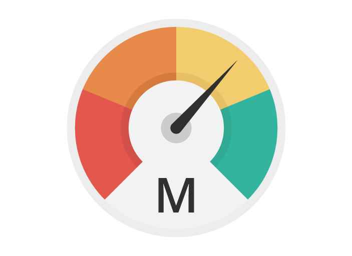
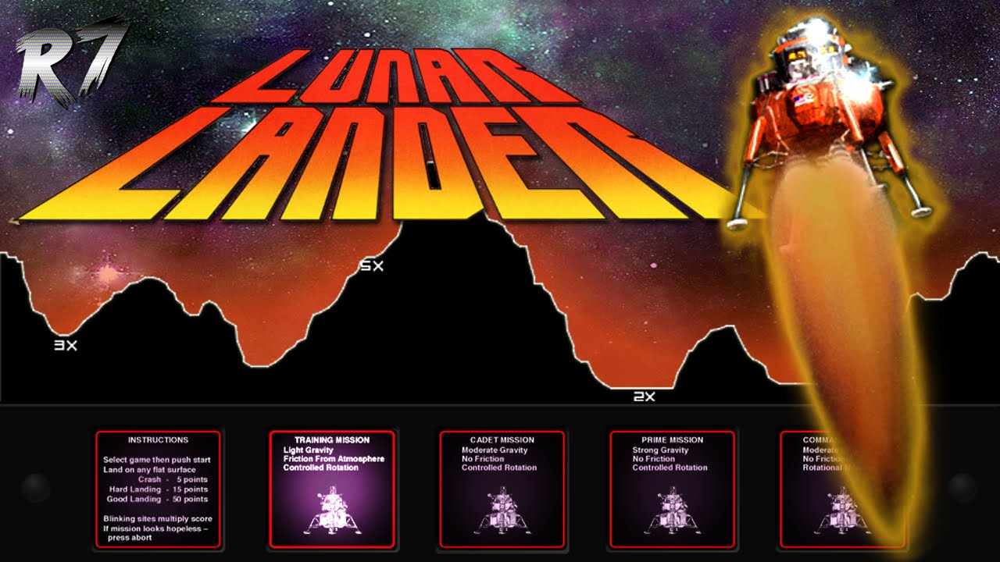

Cellular Metrics is an Android application for crowdsourcing cellular metrics data and displaying it on a map. My Senior Project Team received this app and greatly enhanced and modernized it. We optimized the binner algorithm, improving the pre-processing speed of bandwidth test data by over 300%, and implemented support for 5G-specific data, providing users with more detailed coverage insights. Utilized tools such as Python Web Server, Android Studio, PostgreSQL, and Jira, following Agile Scrum methodology for efficient project management and development.
A team project to enhance skills in AWS. Designed and developed a full-stack web application to analyze social media sentiment around COVID-19, leveraging the power of AWS and AI. Created the entire system architecture for efficient sentiment analysis and integrated a robust login system, dynamic visualizations, and advanced filtering options. Utilizing Terraform, I streamlined the deployment process, employing eight AWS tools for optimal performance. Key technologies used include S3 Bucket, EC2, DynamoDB, Comprehend, Cognito, AWS Lambda, API Gateway, and Terraform.

My favorite personal project. A Java-based clone of the popular online game, Wordle, with interactive and automated versions. The automated version incorporates a sophisticated solver that wins 100% of the time with an average of 3.59 guesses per game, executing each game in under three milliseconds. To aid in improving my algorithm, I created multithreaded tests, custom automated debugging tools, and real-time performance estimation.

My introduction to coding and first major personal project. A MATLAB-based Lunar Lander game for landing a rocket on the moon. The game uses a physics model based on Newtonian mechanics and orbital physics to accurately simulate the physical system of landing a rocket on the moon. Enhancements included an autonomous landing algorithm and real-time visualization of ship rotation using 2D matrix multiplication.